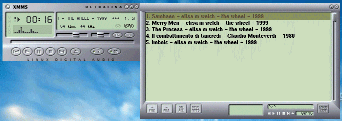

| Packages Used |
| Perl
5.005
CPAN Apache 1.3.6 apache.org mod_perl 1.20 perl.apache.org MPEG::MP3Info 0.71 CPAN |
Lately I’ve been playing with MPEG level 3 (MP3), that wonderful technology that allows you to take a huge CD audio file and reduce its size more than tenfold without perceptible loss of fidelity. The last year has seen an explosion of MP3-related web sites, encoding and playing software, Internet-based CD databases, and even hardware products such as the Diamond Multimedia Rio MP3 player.
One of the neat things that MP3 supports is streaming audio. Instead of downloading the entire MP3 file to disk and then launching a player application to play it, the player retrieves the audio stream directly from the network, playing the music in real time as it downloads. Provided that the available network bandwidth is sufficient, it is much more satisfying to click on a link and instantly hear the music than to wait for a long download to complete.
On the client side, streaming MP3 audio is supported by several of the more popular MP3 players, including WinAmp on Microsoft Windows systems, and the open source Xmms program for Unix machines. On the server side, streaming MP3 audio is supported by the commercial Shoutcast system on Windows platforms, and by the open source Icecast system on Linux and other Unix platforms. In addition to providing streaming MP3 audio to clients, the Shoutcast and Icecast systems implement a form of Internet broadcasting that allows people with the appropriate client software to send an audio stream to an Internet server. The server relays the broadcast along a set of replica servers, which in turn stream the audio to anyone who tunes in to the proper channel.
I played with the Icecast server for a while, but wasn’t particularly interested in its broadcasting abilities. I really just wanted to stream static MP3 files from the comfort and convenience of my Apache web server. So I started looking into how Shoutcast/Icecast do MP3 streaming. The result was Apache::MP3, an Apache module written to run under the mod_perl embedded interpreter.
It turns out that the core of MP3 streaming is not difficult at all. All that you have to do for a rudimentary form of streaming is put an MP3 file on a web server, fire up your favorite stream-savvy MP3 player, and tell the player to open the sound file’s URL. The MP3 player contacts the web server, generates a correctly-formed GET request for the sound file, and plays it as soon as the data begins to appear. So what more needs to be done?
There were two things that bothered me about this. The first problem was that I had to open up the URL from within the player application. Although WinAmp has a "mini-browser" built into it, its browser window is small and its abilities are extremely limited (and it displays advertising). Other players have no built-in browser at all, which required me to type in the URLs by hand, something I avoid whenever possible. Ideally I would like to click on a link in Netscape Navigator or Internet Explorer, and have the player application pop up and immediately begin playing the audio stream.
A second annoyance was that when the player application opens an MP3 URL, it displays the http:// URL in its playlist and title area. Call me compulsive, but I don’t care to see the URL in the playlist. I’d rather see the artist’s name, the title of the album, and the title of the track.
My initial solution to problem number one was to configure my Web browser to use Xmms as the helper application for MP3 files, which I did by adding the line below to my .mailcap file. Mailcap files, often located in home directories, contain a list of MIME types and an application to launch upon encountering data of that type. This line makes audio/mpeg messages trigger the Xmms application.
audio/mpeg; xmms %s
This didn’t work at all the way I wanted. Netscape downloaded the entire file to disk, and then launched Xmms to play it.
My next solution was only slightly better. I changed the .mailcap entry to read:
audio/mpeg; xmms %u
A little-known Netscape extension to the .mailcap file replaces %u with the URL being downloaded. This caused Xmms to stream the requested URL, which was great, but while the data was streaming, Netscape went ahead and downloaded the entire file to a temporary directory, which it then deleted as soon as the download was finished. There went half my bandwidth!
After poking about a bit in the Icecast sources, I discovered the playlist. A playlist is a list of one or more files or URLs that you can pass to an MP3 player. When an MP3 player is asked to open a playlist, it loads and plays each file or URL in the order specified. Playlists have a MIME type of audio/mpegurl and a straightforward format. A sample playlist is shown in Figure 1.
|
Figure 1: A playlist is a list of files or URLs for an
MP3 player to load and play:
[playlist] NumberOfEntries=4File1=http://stein.cshl.org/samples/the_wheel/Imbolc.mp3 File2=http://stein.cshl.org/samples/the_wheel/Samhain.mp3 File3=http://stein.cshl.org/samples/the_wheel/Merry_Men.mp3 File4=http://stein.cshl.org/samples/the_wheel/The_Process.mp3  |
With this knowledge, the solution to the first problem became clear. Arrange for Apache to generate playlists on the fly, and then declare the MP3 player to be the helper application for MIME type audio/mpegurl:
audio/mpegurl; xmms %s
As it turned out, on Windows and Macintosh systems the streaming audio players register themselves as audio/mpegurl helper applications when they are first installed, so this step is only necessary on Unix systems.
So much for problem 1. But what about problem 2? MP3 files ordinarily embed information about the artist, title, genre, and track in a data structure called an ID3 tag. The problem is that this information is located at the very end of the file, a position that is very inconvenient for a streaming protocol that doesn’t get to the end of the file until all its work is done. I knew that MP3 players were able to display title information while streaming Shoutcast/Icecast broadcasts, so there must be some way that these servers transmitted the information at the very beginning of the broadcast.
Examining the Icecast source code revealed one such method. Before an Icecast server begins to transmit the MP3 data, it sends a series of headers that describe the audio stream. A typical set of headers is shown in Figure 2.
It begins with an HTTP-like status, ICY 200 OK, followed by a set of icy- lines. The important fields are icy-name, which provides the name of the work to display in the player window; icy-genre, which specifies the genre of the piece, icy-url, which causes WinAmp to display the specified page in its mini-browser window; and icy-br, which specifies the bitrate of the MP3 file. I’m not sure what icy-pub means, but presumably it has something to do with the broadcast aspect of the Shoutcast/Icecast protocol. (No, and I don’t know what the "icy" prefix means either; if the protocol is published, I haven’t been able to find it.)
When a Shoutcast/Icecast server responds to a GET request from a player, it provides this header as a substitute for the standard HTTP header. In addition to providing this data up front, the servers also respond to clients that request the data via a UDP-based mechanism. This is to satisfy clients that enter a musical broadcast halfway, so my application doesn’t need to handle this.
Having accomplished this bit of reverse engineering, my last research task was to figure out how to read the ID3 tags in order to get them into the Shoutcast headers. Fortunately, this task was rendered trivial by Chris Nandor’s MPEG::MP3Info, a Perl module capable of reading and writing ID3 tags.
Apache::MP3 is designed to respond to requests for a playlist document ending in the extension .pls (which is standard), or a streaming MP3 document ending in the extension .mps (which I made up for this application). Neither of these documents exist as static files, but are generated as needed dynamically from a directory structure containing MP3 files.
The rules for the playlist construction are a bit tricky. Consider a Web root that contains a top-level directory named samples, and that it contains four files arranged in the following manner:
/samples/the_wheel/Imbolc.mp3 /samples/the_wheel/Samhain.mp3 /samples/the_wheel/Merry_Men.mp3 /samples/the_wheel/The_Process.mp3
A request for the URL /samples/the_wheel/ Merry_Men.pls makes Apache::MP3 look at the /samples/the_wheel directory, notice that there is a MP3 file with the same basename as the requested playlist, and autogenerate a playlist containing the single URL http://my.site/samples/the_wheel/Merry_men.mps. Notice that the URL generated by Apache::MP3 is a request for a .mps URL rather than for the MP3 file itself. The .mps URL will be used in a second request to generate an MP3 stream.
Apache::MP3 can also generate a playlist for an entire directory of MP3 files. Just take the directory name and add a .pls extension. For example, if the browser requests the URL /samples/the_wheel.pls, Apache::MP3 will construct a playlist containing the four URLs /samples/the_wheel/Imbolc.mps through /samples/the_wheel/The_Process.mps.
When Apache::MP3 receives a request for a URL ending in the extension .mps, it looks for the corresponding MP3 file, extracts its ID3 tags with MPEG::MP3Info, constructs a Shoutcast/Icecast header, and streams the file to the client.
Apache::MP3 is implemented as an Apache module using the mod_perl API. This makes it fast and flexible. If you are unfamiliar with the mod_perl API, I refer you to the introductory article that Doug MacEachern and I wrote for TPJ #9. To install Apache::MP3, copy MP3.pm to the directory where your Apache mod_perl modules live: either the Perl site-specific module directory, or one that was specifically configured for use by Apache. Then add the following directives to your Apache configuration file:
AddType audio/mpeg .mp3
AddType audio/mpegurl .pls
AddType audio/x-shoutcast-stream .mps
<Files ~ "\.(pls|mps)$">
SetHandler perl-script
PerlHandler Apache::MP3
</Files>
The first three directives assign the appropriate MIME types to the file extensions .mp3, .pls, and .mps. The first two are standard, but the third one is new. The Shoutcast/Icecast system doesn’t use MIME types for its audio streams, but I felt that there should be some MIME type entry for the purpose of documentation. This is followed by a <Files> section declaring that requests for files ending in .pls or .mps should be handled by mod_perl. The SetHandler directive tells Apache to pass the request to the mod_perl interpreter, and the PerlHandler directive tells mod_perl to run and load the Apache::MP3 module.
The code for Apache::MP3 is shown in Listing 1. It begins by bringing in the various modules the code needs, including the list of commonly-used Apache server result codes, the MPEG::MP3Info module, the IO::Dir package for object-oriented directory handle access, and Apache::File, a lightweight alternative to the IO::File object-oriented file access class.
The entry point for Apache::MP3 is a subroutine named handler(), which extends from lines 22 to 51. It is called by mod_perl to process very request that comes in for a .pls or .mps URL. handler() begins by storing the Apache request object from the subroutine stack into a variable named $r. The request object will be used for all communication with the Apache server. The code then reconstructs the URL for the server by calling various methods in the request object (lines 26-29). This server URL will be used later in various places later.
Lines 30-33 parse out the basename of the requested file (the name without the extension), the physical directory that the requested file lives in, and the virtual directory (in URL space) of the requested URL. We need both the physical and the virtual directory paths because we will be retrieving information about files located on the physical file system, but transmitting back a playlist containing URLs. Notice the use of the request object’s filename() method to retrieve the request translated into a physical filesystem path, and uri() to recover the same information expressed as a URL. Lines 34-44 deal with a request for a playlist. We call the request object’s content_type() method, and test to see if it matches MIME type audio/mpegurl. Testing the request indirectly via its MIME type is cleaner because it avoids hard-coding file extensions into the module. If the MIME type matches, then this is a request for a playlist. We now test to see whether the basename corresponds to a directory, and if so call an internal routine named dir2playlist() with arguments that make it generate a playlist for the entire directory. Otherwise, we generate a playlist that contains only a single entry, by calling dir2playlist() with arguments that make the subroutine include only those MP3 files that share the common basename.
Lines 45-50 deal with a request for a streaming MP3 file, MIME content type audio/x-shoutcast-stream. The code calls an internal subroutine named search4mp3() to retrieve MP3 files in the directory that share the same basename. If no matching MP3 file is found, the handler aborts by returning an error code of DECLINED. Otherwise it calls a routine named send_stream() to stream the file to the client.
Lines 52-64 implement the search4mp3() function. It takes three arguments: the request object, the directory to search in, and an optional search string containing the basename to match. It searches through the indicated directory and returns all files of type audio/mpeg whose basenames match the search string. The search string may be undefined, in which case all MP3 files are returned. We search for MP3 files in this way rather than simply tacking a .mp3 extension onto the basename in the name of flexibility. Perhaps this module will need to support MPEG level 4 files some day; or perhaps some of the files in the directory are generated by a DOS program that uses the uppercase .MP3 extension.
The logic of search4mp3() is simple. It quotes metacharacters in the search string by calling Perl’s quotemeta() function (line 55) and stores the result in a variable named $pattern. It uses IO::Dir to create a new directory handle and loops through each entry in the directory. For each directory entry, it tests to see if its name matches the pattern, skipping the test if no basename was specified. It then calls the request object’s lookup_file() method to ask Apache what it thinks the file’s MIME type is. If the entry matches audio/mpeg, then the entry is pushed onto a growing list. For searches in which no search string was specified, search4mp3() returns all MP3 files in the directory. Otherwise, search4mp3() usually returns a list of length zero (nothing found) or one (a single MP3 file found). If the web server allows several alternative extensions for MP3 audio files, however, it is possible for search4mp3() to return a list greater than length 1.
Lines 66-80 implement dir2playlist(), which generates a playlist containing one or more MP3 URLs. It is called with the Apache request object, the directory to search in, the basename of the file to search for, and a URL prefix to prepend to the names of all matching files. This URL prefix contains the hostname and port, as well as the partial directory path. dir2playlist() calls search4mp3() to retrieve the list of matching MP3 files and stores them into an array named @mp3 (lines 68-69). If this array is empty, the routine returns DECLINED, causing Apache to return the standard "File not found" error.
Otherwise dir2playlist() sets the outgoing content type to audio/mpegurl and sends the HTTP header by calling the request object’s send_http_header() method (line 71). After calling the request object’s header_only() method to check whs the playlist file a line at a time by calling the request object’s print() method repeatedly. Most of the action occurs in lines 75-78, where the subroutine loops through all the MP3 files in the @mp3 array. Each one is transformed into a corresponding .mps file using a string substitution, and incorporated into the playlist, producing a format like the one shown earlier in Figure 1.
The last and most interesting part of this module is the subroutine send_stream() (lines 82-105), which is responsible for converting an MP3 file into a Shoutcast/Icecast-compatible stream. It receives three arguments: the request object, the physical path to the MP3 file to send, and the URL of the server. This last argument is required in order to satisfy WinAmp, which likes to pop up a mini-browser showing the home page of the streaming audio source.
Lines 84-85 call two functions imported from MPEG::MP3Info to recover information about the requested MP3 file. get_mp3tag() returns the ID3 tag structure containing information about the content of the audio file. It is a hash reference containing keys like TITLE, ARTIST, and so forth. get_mp3info() returns low-level information about the audio file, such as its bitrate, length, and MPEG layer. get_mp3tag() may return an undefined value if no ID3 information has been ever added to the audio file, but if get_mp3info() returns undef, it’s a good indication that the file isn’t a valid MP3 file, in which case we bail out by returning DECLINED. Otherwise we try to open the file for reading by calling Apache::File’s new() method (line 87). If, for whatever reason, this fails, we again bail by returning the DECLINED result code.
The next step is to generate a human-readable title string from the ID3 tag information. This title scrolls across the MP3 player’s main screen and appears in its playlist window. After experimenting with various formats, I decided that I liked this one the best:
TITLE - ARTIST - ALBUM - YEAR - COMMENT
Lines 88-91 assemble this title from the ID3 tag information in such a way that undefined fields are simply ignored. If the TITLE field is undefined, then we default to the current URL.
Line 92 retrieves the ID3 genre tag, which is needed by the Shoutcast/Icecast headers. This information does not seem to be used by the clients that I’ve examined, and is probably used instead by the Shoutcast/Icecast system to create directory listings of available audio channels.
Lines 93 through 102 construct the Shoutcast/Icecast headers. Notice that these headers replace the normal HTTP headers — the usual call to send_http_header() is absent. (This is one reason that it would be difficult to write this module in the form of a CGI script.) We print out the ICY status line, the title of the work, the genre, the URL, and the audio bitrate recovered earlier from the call to get_mp3info(). We use carriage return/linefeed pairs (\r\n) at the end of each line rather than a simple newline because that’s the way that Shoutcast/Icecast servers do it. The header is terminated by a blank line.
If the client sent a HEAD request, we stop here and return an OK status code (line 102). I doubt whether MP3 players ever make HEAD requests, but this was very useful during debugging when I only wanted to see the Shoutcast/Icecast headers. Otherwise, the subroutine calls the Apache request object’s send_fd() method to send the contents of the MP3 file to the client. This call suspends further processing until the entire file has been streamed to the client, or the client cancels. (Apache itself won’t be suspended, just the one server process or thread that is handling the current request.) When send_fd() returns, we return with a result code of OK.
With Apache::MP3 installed, I am able to load and play the entire contents of a directory with a single click of the mouse on a link like this one:
<a href="/samples/the_wheel.pls">The Wheel</a>
Xmms comes up (see the screenshot in Figure 1) and immediately begins to stream and play the first file. When done, Xmms moves on to the next. The playlist window is initially populated by the raw URLs of each selection, since the player hasn’t yet received the title information. As each file begins to stream, the title provided by Apache::MP3 replaces the URL and scrolls across the player’s main window. Neat!
To stream a single file, use a link like this one:
<a href="/samples/the_wheel/Imbolc.pls">Imbolc (Autumn)</a>
Finally, to download the entire MP3 file to disk in the conventional manner, use this link:
<a href="/samples/the_wheel/Imbolc.mp3">Download Imbolc (Autumn)</a>
Since this is neither a .pls nor a .mps URL, it is handled by Apache as a normal static file request.
I can think of three enhancements to this module. The first would be the ability to place an image of the album’s cover art in the MP3 directory. If the module noticed the existence of this image file during streaming, it would use the image file’s URL as the value of the icy-url: header rather than the home page of the server. The effect of this would be to make WinAmp’s mini-browser display the album’s cover art while streaming the file. Another useful capability would be specifying the order of files appended to the playlist, which currently come out in essentially random order. Finally, if you want to get really fancy, you could hook this module up to MySQL so that playlists cold be constructed dynamically from relational database queries. Go wild!
_ _END_ _